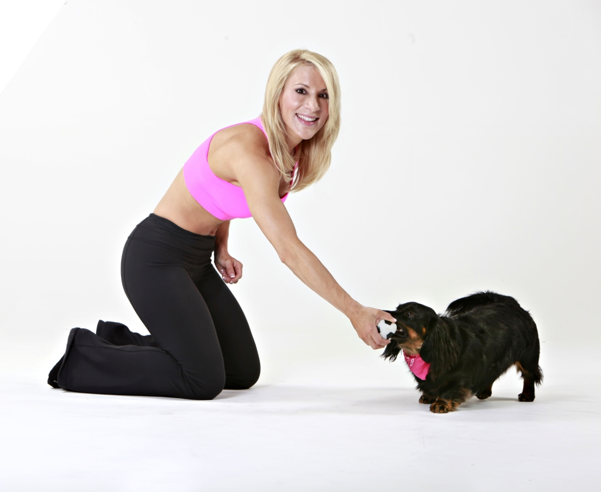

About the workout
Your dog is a member of your family, and you want them to live a long, healthy and happy life. Why not spend quality
time with your dog while BOTH of you get fit? 4Paws Fitness provides a fun exercise game for your dog, and a strengthening,
body sculpting, fat burning workout for you.
The 4 Paws workout includes a warm up, 3 workout circuits, abdominal section and cool down - both for you and your dog.
It can be done in bouts of 5 minutes or longer! (depending on the endurance of you and your dog!)
You'll find that you and your buddy can develop a greater bond by exercising together, and you'll not only enjoy time together
today - you'll increase the quality of time spent in years to come! Have fun, get fit and give lots of love to your 4 Paw Pal!
Grab your favorite fetch toy and get ready to have the most fun that you've ever had while working out! Go get it!
